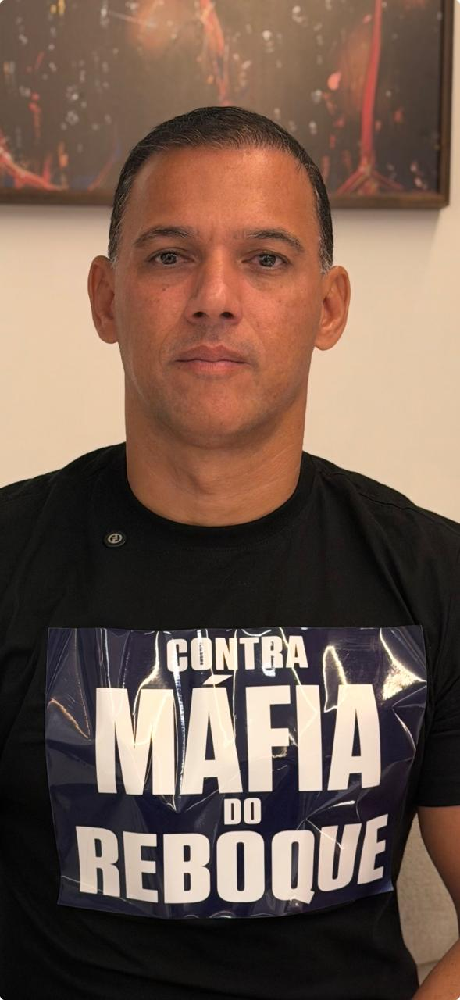

Tarifas Abusivas
Uma simples remoção pode custar o equivalente a semanas de salário. Sem tabela fixada, cada guincho cobra o que quer — e ninguém regula.

EU APOIO
A Máfia do Reboque
Em defesa da população de Recife
Gratuito · 30 segundos · Sua voz importa
📱 Siga Dilson Batista — antes que tirem do ar também:
Página derrubada pela pressão da Máfia do Reboque
Dilson Batista explica tudo — o que está acontecendo em Recife e por que este abaixo-assinado é urgente.
"Eu, cidadão(ã) de Recife, assino este abaixo-assinado e declaro meu apoio a Dilson Batista. Exijo medidas urgentes e efetivas contra a Máfia do Reboque, em defesa de toda a nossa população."
Todos os dias, cidadãos de Recife são extorquidos por um sistema corrupto de guinchos e depósitos. Conheça os abusos que o poder público se recusa a combater:
Uma simples remoção pode custar o equivalente a semanas de salário. Sem tabela fixada, cada guincho cobra o que quer — e ninguém regula.
A diária do depósito corre enquanto você não tem dinheiro para pagar. Muita gente perde o carro que levou anos para conquistar.
Denúncias apontam para acordos entre guinchos e agentes públicos. Indicações suspeitas, rotas controladas. Quem perde é o cidadão honesto.
Não há transparência, nem ouvidoria eficiente, nem punição para os abusos. O povo reclama há anos — e o poder público olha para o lado.
Dilson Batista é candidato comprometido com a população de Recife. Ele conhece na pele o que o cidadão enfrenta todos os dias — e decidiu entrar na política com uma missão clara: ser a voz de quem não tem vez.
Sua proposta para acabar com a Máfia do Reboque é concreta, objetiva e sem concessões aos interesses que dominam o setor há anos.
A Máfia do Reboque é um sistema corrupto de guinchos e depósitos que cobra tarifas abusivas, retém veículos como reféns e opera com suspeitas de conluio com agentes públicos em Recife-PE. Cidadãos relatam cobranças equivalentes a semanas de salário por uma simples remoção.
Anteriores iniciativas de denúncia contra a Máfia do Reboque sofreram pressão e tiveram perfis e páginas removidos de redes sociais. É por isso que esta página usa uma estrutura independente e pedimos que você assine e compartilhe urgentemente.
O abaixo-assinado é digital e gratuito. Basta preencher nome, e-mail e WhatsApp e clicar em "EU APOIO DILSON BATISTA". Sua assinatura é registrada em uma lista oficial que será apresentada às autoridades competentes de Recife.
Sim. Seus dados são usados exclusivamente para registrar sua assinatura, em conformidade com a Lei Geral de Proteção de Dados (LGPD — Lei 13.709/2018). Não compartilhamos suas informações com terceiros. Consulte nossa Política de Privacidade completa.
As propostas concretas incluem: regulamentar tarifas máximas para guinchos; criar canal de denúncias com resposta em 24h; investigar convênios suspeitos; garantir fiscalização permanente e transparência; e defender o bolso do cidadão de Recife.
Cada nova assinatura aumenta a pressão sobre as autoridades para agir. Compartilhe no WhatsApp, Instagram e com amigos. Quanto mais visibilidade, mais difícil será para a Máfia do Reboque silenciar o movimento.